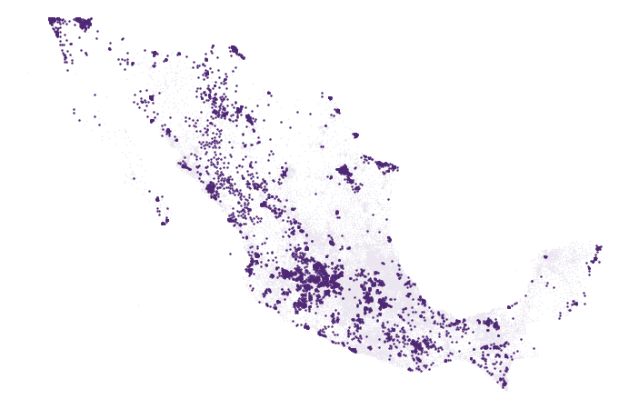
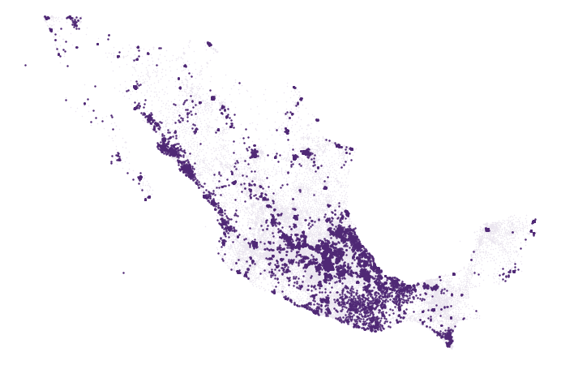
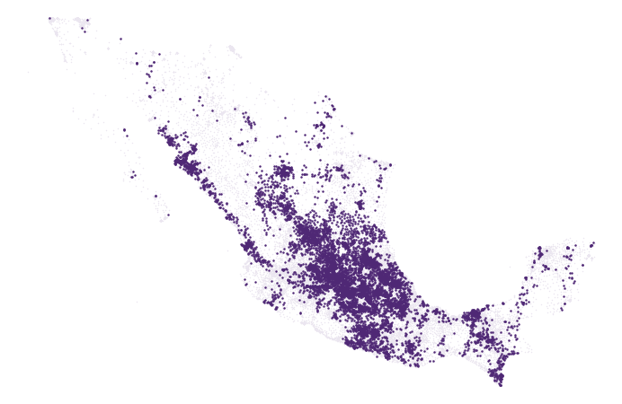
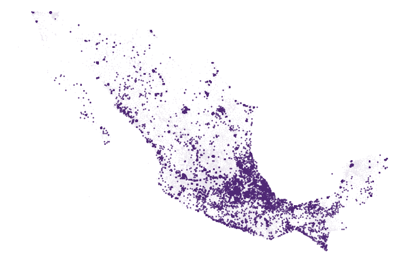
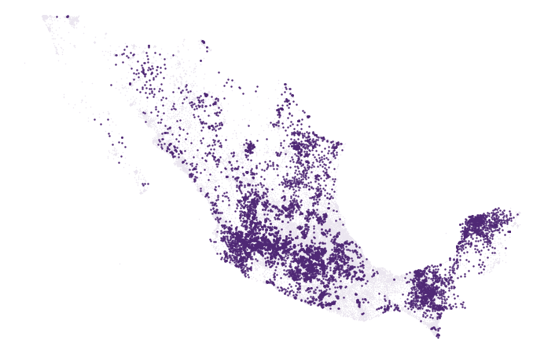

Reto 1 · Perfiles ciudadanos de participación
Cinco tipos de ciudadanía electoral
Quién vota, quién falta y cómo dirigirse a cada perfil, con la Plataforma CCPC 2009-2024
HACKEA LA PARTICIPACIÓN: DATOS QUE CONSTRUYEN DEMOCRACIA · 2026
El hallazgo
Un hueco que se repite en todo el país
27%
de quienes no votan son hombres de 25 a 44 años, aunque son solo 20% de la lista nominal.
La pregunta del reto: ¿qué tipos de ciudadanía existen según su participación?
64,096 secciones, seis elecciones federales (2009-2024), solo datos agregados de la CCPC y sin voto por partido.
32%
del nivel de 2024 lo explican perfiles hechos solo con 2009-2018 (al azar: 0%)
85%
de coincidencia en la asignación de cada sección en réplicas con ruido
7.7 M
votos recuperables por elección (de 4.1 a 11.9 M según la referencia)
Método
Tres rasgos que sí persisten en el tiempo
De ocho rasgos candidatos conservamos los que se repiten entre 2009-2015 y 2018-2024, ventanas sin elecciones en común.
1Nivel de participación
r 0.70
relativo al promedio nacional de cada elección
2Brecha de género
r 0.65
mujeres menos hombres, de 18 a 54 años
3Brecha de jóvenes
r 0.49
18-34 frente a 55-74 años
Cinco perfiles con K-means: el número más estable y el que mejor predice 2024 en el rango de 4 a 6 que pide la convocatoria. La asignación de cada sección se recalcula con cada CCPC.
Lo que no persiste: la intermitencia (votar solo en presidenciales) es nacional, no territorial (r 0.28 en secciones, 0.07 en municipios). Solo describe.
Fuente: INFORME §2 y §5; confiabilidad_rasgos.csv
Validación fuera de muestra
Los perfiles del pasado anticipan 2024
27%
de la brecha de género
Varianza que explican perfiles construidos solo con 2009-2018. Con grupos al azar: 0%.
R² medio, validación cruzada por entidad
K-means sobre 14 celdas de edad y sexo
K-means sobre los tres rasgos
Pertenencia a cinco arquetipos
Para comunicar: 5 perfiles. Explican 55-61% de la varianza de cada eje; solo 11% de la lista nominal queda cerca de una frontera.
Para priorizar: rasgos continuos. Los datos son un continuo; las pertenencias suaves conservan toda la información (R² 0.40).
Fuente: INFORME §5 y §5.1; validacion_tipologia.csv, comparacion_algoritmos.csv
Los perfiles
Cinco tipos de ciudadanía
1Baja participación del norte urbano«Nadie vota mucho»
44%
participación media
19.3 M electores (21%)
Brecha de género 8 pp
Jóvenes −20 pp
2Rezago juvenil urbano«Votan los padres, no los hijos»
52%
participación media
25.7 M electores (28%)
Brecha de género 11 pp
Jóvenes −26 pp
3Rural con brecha masculina«Votan ellas, no ellos»
60%
participación media
10.2 M electores (11%)
Brecha de género 19 pp
Jóvenes −22 pp
4Urbano de participación media-alta«Consolidado, con mujeres jóvenes por debajo»
62%
participación media
25.2 M electores (28%)
Brecha de género 8 pp
Jóvenes −20 pp
5Alta participación comunitaria«La referencia»
68%
participación media
9.8 M electores (11%)
Brecha de género 11 pp
Jóvenes −11 pp
Participación media 2015-2024. Brechas en puntos porcentuales: mujeres menos hombres (18-54 años) y 18-34 frente a 55-74 años.
Geografía
Dónde está cada perfil

1Norte urbano
Baja California 90%, Chihuahua 70%

2Rezago juvenil
Edomex 46%, Veracruz 46%

3Rural, brecha masculina
Zacatecas 28%, SLP 24%

4Urbano medio-alto
CDMX 60%, Tlaxcala 52%

5Comunitario
Yucatán 43%, Campeche 37%
Cada punto es una sección electoral (marco 2021). Las cifras son la parte de la lista nominal de la entidad que está en ese perfil.
Los perfiles no son regiones: cada uno se concentra en algunas entidades, pero aparece en muchas.
Quién falta
Lo común y lo distinto
Común a los cinco
Los hombres de 25 a 34 años son el grupo con más personas que no votan en todos los perfiles.
La caída en las intermedias (15 puntos en 2015 y 10 en 2021) es nacional, no territorial: la movilización de 2027 debe ser nacional.
Distinto por perfil
1Norte urbano: todas las edades votan menos
2Rezago juvenil: los menores de 45 años
3Rural: hombres de 25 a 44 (37% frente a 64% de las mujeres de 25 a 34); causa abierta
4Urbano medio-alto: mujeres de 25 a 34 (−8.6 pp)
5Comunitario: la referencia; los jóvenes votan casi como los adultos
Estrategias diferenciadas
Un mensaje, un canal y un indicador por perfil
PerfilA quiénMensaje y canal (hipótesis a probar)
1Norte urbano18-34 años«Tu voto cuenta donde vives»: dónde votar y cómo actualizar el domicilio. Celular, trabajo, universidades.
2Rezago juvenilHombres y mujeres de 25-34Primer voto y relevancia local. Pares y escuelas; mayores como multiplicadores en casa.
3Rural, brecha masculinaHombres de 25-44Primero un estudio cualitativo; después TV, radio local y contacto presencial.
4Urbano medio-altoMujeres de 25-34; 75+Horario y tiempos de espera en casilla. Redes y centros de trabajo.
5Comunitario75+; aprender de sus jóvenesContinuidad y accesibilidad; entrevistas comunitarias.
Indicador común: la participación de las celdas objetivo medida con la CCPC 2027. Los mensajes son neutrales: sin contenido partidista.
Dónde está el potencial
Votos que se recuperarían por elección
Por nivel de participación, millones de votos
1 Norte urbano
2 Rezago juvenil
3 Rural, brecha masculina
4 Urbano medio-alto
5 Comunitario
Si cada sección alcanzara al cuarto superior de secciones comparables (mismo tipo urbano, mixto o rural). Los criterios se solapan y no se suman.
7.7 M
por nivel (de 4.1 a 11.9 M según la referencia)
3.8 M
por la brecha de género de los hombres de 18 a 54
3.5 M
por los jóvenes de 18 a 34
61 municipios reúnen la mitad del potencial por nivel; encabezan Tijuana, Juárez, Mexicali, León y Puebla.
Fuente: politica_grupos.csv, politica_sensibilidad.csv, politica_municipios.csv
Aplicación institucional
Plan para 2027: un piloto aleatorizado y medible
1NOV 2026 - FEB 2027
Estudio cualitativo en el perfil 3 y selección aleatoria de secciones
2JUNIO 2027
Piloto en la elección intermedia, con brazos de control y de mensaje
3CCPC 2027
Medición del efecto y actualización de la tipología
UnidadSección; azar dentro de municipio y perfil
BrazosControl · mensaje práctico neutral · contacto presencial (perfil 3)
ResultadoCambio 2021→2027 de las celdas objetivo, con la CCPC
Poder250 secciones por brazo: efecto mínimo de 1.4-1.7 pp; con 1,000: 0.7-0.8 pp
Quién lo usa: Juntas Distritales (tablero por sección), DECEyEC (mensajes), DERFE (domicilios).
Límites: perfiles descriptivos, no causales; estrategias como hipótesis; la lista nominal sobreestima la abstención donde hay emigración; sin voto por partido.
Código y tablero abiertos; se actualizan con cada CCPC: github.com/gpancardo/ine